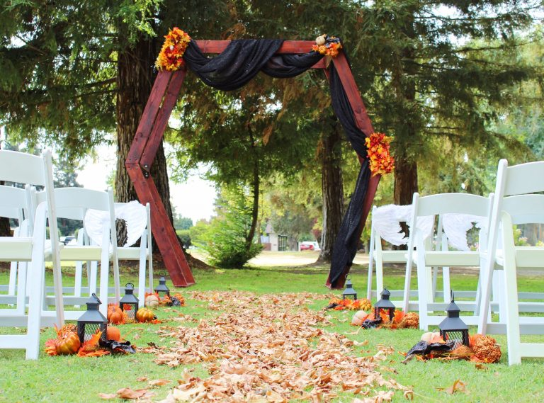

At the table
Settle in.
Stay awhile.
A relaxed place for golfers, neighbors, friends, and families to share a meal and let the day unfold at its own pace.
The restaurant
Meet at
Elkhorn.
Some meals follow a round. Others are the reason for getting together in the first place.
The restaurant brings an easygoing point of view to the Elkhorn property. For the current menu, service information, and restaurant contact details, use the official restaurant page.
View current restaurant details
A natural gathering place
Come as
you are.
A shared table can be a finish line, a starting point, or simply a welcome pause. The restaurant connects easily to golf days, casual meetups, and celebrations elsewhere on the property.
Plan your visit
The details,
kept current.
Menus and service information can change. We keep this experience focused on the setting and point you to the official restaurant page for current information.
Looking beyond the table? Explore the course or begin planning a private event at Elkhorn.
Current restaurant information
Ready to
make plans?
Continue to the official restaurant page for the current menu, service details, and contact information.